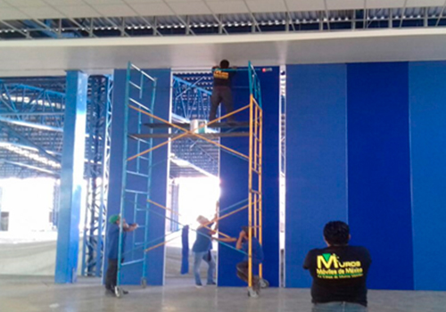

Muros Móviles Ciudad de México
Es el sistema de muros móviles y acusticos más versátil, económico, fácil de operar y mantener por su alta tecnología y desarrollo.
Fabricación de Muros Móviles
Nuestros muros acústicos están fabricados a base de paneles individuales de 1.00 a 1.20 mts, de ancho, con 9 y 10 cms de espesor.
Detalles

Mantenimiento de Muros Móviles
Limpieza y lubricaccion del riel, limpieza de deslizadores o carretillas y lubricación de aparatos de cierre.
Detalles
Reparación de Muros Móviles
Reparación de rieles desnivelados, muros de madera rotos, mecanismos de cierre o si requieren de alguna pieza nueva, de cualquier marca o modelos de muros móviles.
Detalles